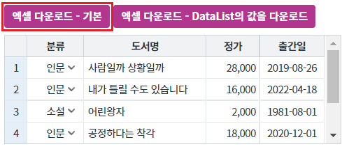
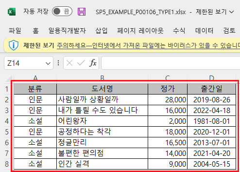
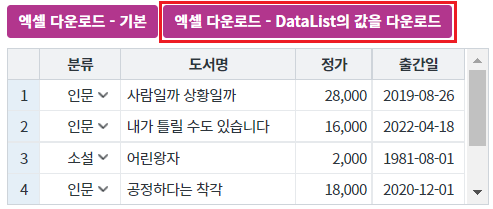
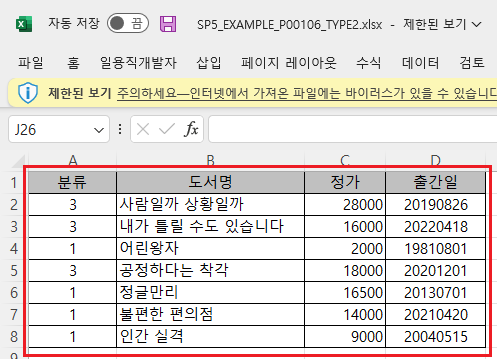
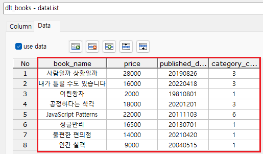
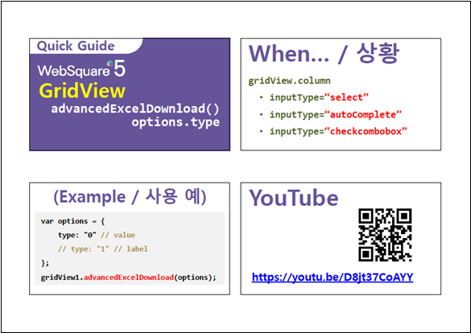

GridView의 엑셀 다운로드 옵션 중 "type" 설정의 예제입니다. 옵션 "type"은 데이터의 출처를 결정합니다. DataList의 데이터 또는 GridView에 출력된 데이터로 지정할 수 있습니다. 기본 설정은 GridView에 출력된 데이터로 다운로드 됩니다.
엑셀 다운로드하기 - 기본 동작
엑셀 다운로드하기 - DataList의 값으로 다운로드
[브라우저(Chrome) 실행 예시]

다운로드 된 엑셀 파일 "SP5_EXAMPLE_P00106_TYPE1.xlsx"을 실행합니다.
GridView에 출력된 데이터와 동일하게 엑셀에 출력됩니다.
[다운로드된 엑셀(2021) 파일 예시]

[브라우저(Chrome) 실행 예시]

다운로드 된 엑셀 파일 "SP5_EXAMPLE_P00106_TYPE2.xlsx"을 실행합니다.
DataList의 데이터와 동일하게 엑셀에 출력됩니다.
[다운로드된 엑셀(2021) 파일 예시]

[DataList의 Data 예시]

GridView와 연결된 DataList 생성 및 연결 방법은 생략되었습니다.
원하는 시점에 엑셀 다운로드 스크립트를 작성합니다.
[소스 코드 예시]
//예제 파일의 스크립트 "scwin.btn_ex2_onclick"를 참고하세요. var jsnOptions; jsnOptions = { fileName : "SP5_EXAMPLE_P00106_TYPE2.xlsx", //엑셀의 파일명 type : 0 //[default:1, 0] 사용할 데이터 출처. 0: DataList의 데이터 사용. 1: GridView에 출력된 데이터 사용 }; // type : [default: 1] 사용할 데이터. GridView 컬럼의 inputType이 SelectBox, AutoComplete, 혹은 CheckComboBox인 경우 해당. 0: value 값 사용. 1: label 값 //GridView "grd_exam1"의 엑셀 다운로드 실행 grd_exam1.advancedExcelDownload(jsnOptions);
advancedExcelDownload( options , infoArr )
[웹스퀘어5 SP5 개발 가이드] GridView
링크 : https://docs1.inswave.com/sp5_user_guide/86bdcf48029b958b
[웹스퀘어5 SP5 개발 가이드] GridView → Excel 다운로드
링크 : https://docs1.inswave.com/sp5_user_guide/bc10c1b82c9a2a0b
[웹스퀘어5 SP5 개발 가이드] GridViwe의 다운로드 할 데이터 종류(value 혹은 label)를 GridView 전체에 대해 명시
링크 : https://docs1.inswave.com/sp5_user_guide/bc10c1b82c9a2a0b#da958bdf75411759
GridViwe의 다운로드 할 데이터 종류(value 혹은 label)를 GridView 전체에 대해 명시
링크 : https://youtu.be/D8jt37CoAYY
